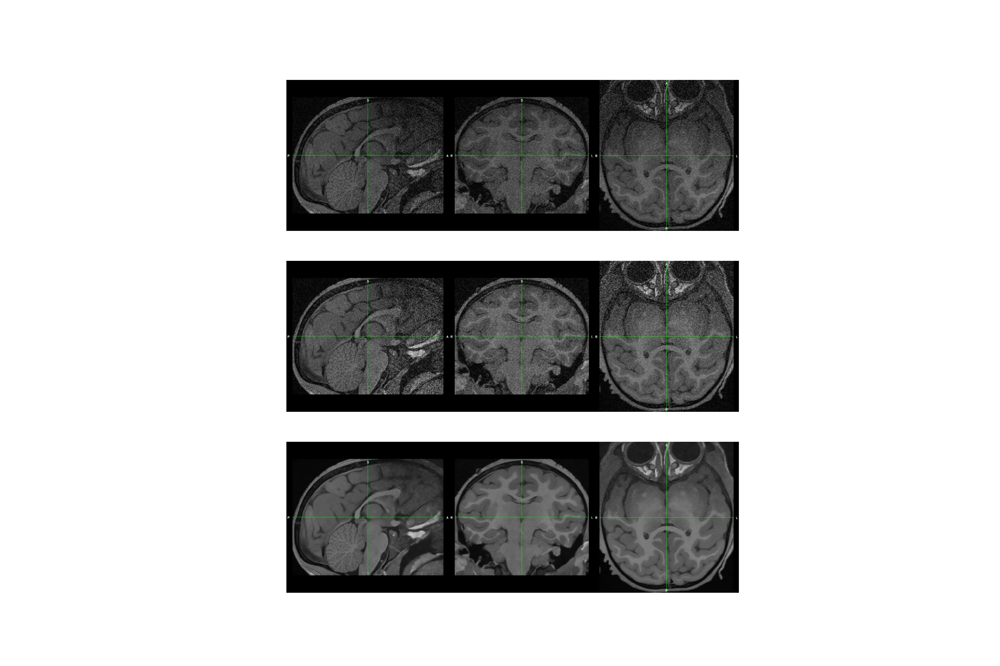
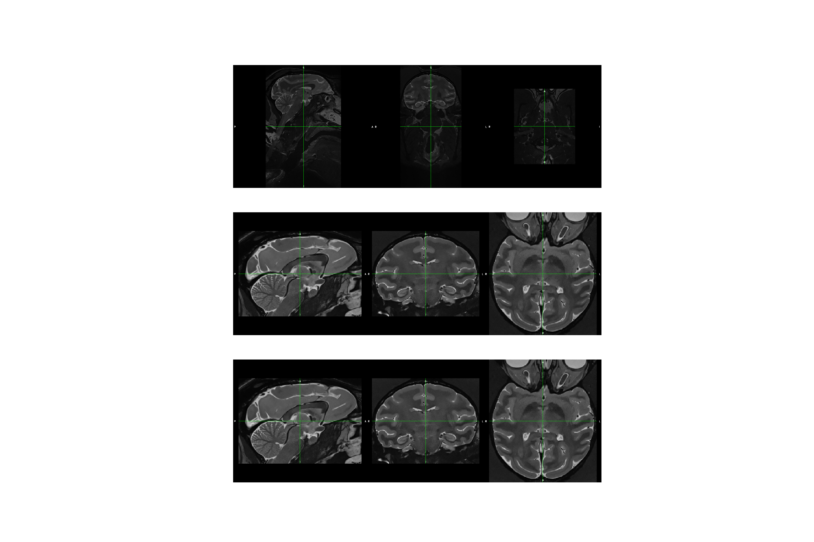

Note
Click here to download the full example code
Plot the results of a segmentation of a baboon dataset with ANTS-based pipeline¶
# Authors: David Meunier <david_meunier_79@hotmail.fr>
# License: BSD (3-clause)
# sphinx_gallery_thumbnail_number = 2
import os
import os.path as op
import json
import pprint
from macapype.utils.utils_tests import load_test_data
import matplotlib.pyplot as plt # noqa
Testing plot in local¶
data_path = load_test_data("data_test_baboon_processed")
wf_path = os.path.join(data_path, "example_segment_baboon_ants_based_Odor")
graph = os.path.join(wf_path, "graph.png")
img = plt.imread(graph)
plt.figure(figsize=(36, 72))
plt.imshow(img)
plt.axis('off')
plt.show()
Out:
data_dirpath /home/meunier.d/data_macapype already exists
/home/meunier.d/data_macapype/data_test_baboon_processed Already exists, skipping download
Data preparation¶
results of cropping¶
cropped_T1_file = op.join(wf_path, "short_data_preparation_pipe", "prep_T1",
"crop", "sub-Odor_ses-T1_T1w_roi.nii.gz")
assert op.exists(cropped_T1_file), "Error with {}".format(cropped_T1_file)
# displaying results
cropped_T1 = os.path.join(wf_path, "cropped_T1.png")
cmd = "fsleyes render --outfile {} --size 1800 600 {}".format(cropped_T1,
cropped_T1_file)
os.system(cmd)
cropped_T2_file = op.join(wf_path, "short_data_preparation_pipe", "prep_T2",
"crop", "sub-Odor_ses-T1_T2w_roi.nii.gz")
assert op.exists(cropped_T2_file), "Error with {}".format(cropped_T2_file)
# displaying results
cropped_T2 = os.path.join(wf_path, "cropped_T2.png")
cmd = "fsleyes render --outfile {} --size 1800 600 {}".format(cropped_T2,
cropped_T2_file)
os.system(cmd)
Out:
0
results of norm_intensity¶
norm_intensity_T1_file = op.join(wf_path, "short_data_preparation_pipe",
"prep_T1", "norm_intensity",
"sub-Odor_ses-T1_T1w_roi_corrected.nii.gz")
assert op.exists(norm_intensity_T1_file), "Error with {}".format(norm_intensity_T1_file)
# displaying results
norm_intensity_T1 = os.path.join(wf_path, "norm_intensity_T1.png")
cmd = "fsleyes render --outfile {} --size 1800 600 {}".format(norm_intensity_T1, norm_intensity_T1_file)
os.system(cmd)
norm_intensity_T2_file = op.join(wf_path, "short_data_preparation_pipe",
"prep_T2", "norm_intensity",
"sub-Odor_ses-T1_T2w_roi_corrected.nii.gz")
assert op.exists(norm_intensity_T2_file), "Error with {}".format(norm_intensity_T2_file)
# displaying results
norm_intensity_T2 = os.path.join(wf_path, "norm_intensity_T2.png")
cmd = "fsleyes render --outfile {} --size 1800 600 {}".format(norm_intensity_T2, norm_intensity_T2_file)
os.system(cmd)
Out:
0
results of denoising¶
denoise_T1_file = op.join(
wf_path, "short_data_preparation_pipe", "prep_T1", "denoise",
"sub-Odor_ses-T1_T1w_roi_corrected_noise_corrected.nii.gz")
assert op.exists(denoise_T1_file), "Error with {}".format(denoise_T1_file)
# displaying results
denoise_T1 = os.path.join(wf_path, "denoise_T1.png")
cmd = "fsleyes render --outfile {} --size 1800 600 {}".format(denoise_T1, denoise_T1_file)
os.system(cmd)
denoise_T2_file = op.join(
wf_path, "short_data_preparation_pipe", "prep_T2", "denoise",
"sub-Odor_ses-T1_T2w_roi_corrected_noise_corrected.nii.gz")
assert op.exists(denoise_T2_file), "Error with {}".format(denoise_T2_file)
# displaying results
denoise_T2 = os.path.join(wf_path, "denoise_T2.png")
cmd = "fsleyes render --outfile {} --size 1800 600 {}".format(denoise_T2,
denoise_T2_file)
os.system(cmd)
Out:
0
fig, axs = plt.subplots(3, 1, figsize=(36, 24))
axs[0].imshow(plt.imread(cropped_T1))
axs[0].axis('off')
axs[1].imshow(plt.imread(norm_intensity_T1))
axs[1].axis('off')
axs[2].imshow(plt.imread(denoise_T1))
axs[2].axis('off')
plt.show()
fig, axs = plt.subplots(3, 1, figsize=(36, 24))
axs[0].imshow(plt.imread(cropped_T2))
axs[0].axis('off')
axs[1].imshow(plt.imread(norm_intensity_T2))
axs[1].axis('off')
axs[2].imshow(plt.imread(denoise_T2))
axs[2].axis('off')
plt.show()
- 
- 
First part of the pipeline: brain extraction¶
Correct bias results¶
debiased_T1_file = op.join(
wf_path, "brain_extraction_pipe", "correct_bias_pipe", "restore_T1",
"sub-Odor_ses-T1_T1w_roi_corrected_noise_corrected_maths.nii.gz")
assert op.exists(norm_intensity_T2_file)
debiased_T1 = os.path.join(wf_path,"debiased_T1.png")
cmd = "fsleyes render --outfile {} --size 1800 600 {}".format(debiased_T1, debiased_T1_file)
os.system(cmd)
import matplotlib.pyplot as plt # noqa
fig, axs = plt.subplots(2, 1, figsize=(36, 24))
axs[0].imshow(plt.imread(denoise_T1))
axs[0].axis('off')
axs[1].imshow(plt.imread(debiased_T1))
axs[1].axis('off')
plt.show()
Brain extraction results¶
# At the end 1st part pipeline
mask_file = os.path.join(
wf_path, "brain_extraction_pipe", "extract_pipe", "smooth_mask",
"sub-Odor_ses-T1_T1w_roi_corrected_noise_corrected_maths_brain_bin_bin.nii.gz")
assert op.exists(mask_file)
mask = os.path.join(wf_path,"mask.png")
#cmd = "fsleyes render --outfile {} --size 800 600 {} -ot mask -o -a 50 {}".format(mask, mask_file, T1_file)
cmd = "fsleyes render --outfile {} --size 800 600 {} {} -a 50".format(mask, cropped_T1_file, mask_file)
os.system(cmd)
import matplotlib.pyplot as plt # noqa
img = plt.imread(mask)
plt.figure(figsize=(36, 12))
plt.imshow(img)
plt.axis('off')
plt.show()
Second part of the pipeline: segmentation¶
debias T1xT2 and debias N4¶
debiased_mask_T1_file = os.path.join(seg_pipe, "masked_correct_bias_pipe", "restore_mask_T1",
"sub-Odor_ses-T1_T1w_roi_corrected_noise_corrected_maths_masked.nii.gz")
debiased_mask_T1 = os.path.join(wf_path,"debiased_mask_T1.png")
cmd = "fsleyes render --outfile {} --size 1800 600 {} -cm Render3".format(debiased_mask_T1, debiased_mask_T1_file)
os.system(cmd)
N4_debias_T1_file = os.path.join(seg_pipe, "register_NMT_pipe", "norm_intensity",
"sub-Odor_ses-T1_T1w_roi_corrected_noise_corrected_maths_masked_corrected.nii.gz")
N4_debias_T1 = os.path.join(wf_path,"N4_debias_T1.png")
cmd = "fsleyes render --outfile {} --size 1800 600 {} -cm Render3".format(N4_debias_T1, N4_debias_T1_file)
os.system(cmd)
import matplotlib.pyplot as plt # noqa
fig, axs = plt.subplots(3, 1, figsize=(36, 24))
axs[0].imshow(plt.imread(norm_intensity_T1))
axs[0].axis('off')
axs[1].imshow(plt.imread(debiased_mask_T1))
axs[1].axis('off')
axs[2].imshow(plt.imread(N4_debias_T1))
axs[2].axis('off')
plt.show()
register template to subject¶
deoblique_T1_file = os.path.join(
seg_pipe, "register_NMT_pipe", "deoblique",
"sub-Odor_ses-T1_T1w_roi_corrected_noise_corrected_maths_masked_corrected.nii.gz")
reg_template_mask_to_T1_file = os.path.join(
seg_pipe, "register_NMT_pipe", "align_NMT",
"Haiko89_Asymmetric.nii.gz")
reg_template_mask_to_T1 = os.path.join(wf_path,"reg_template_mask_to_T1.png")
cmd = "fsleyes render --outfile {} --size 1800 600 {} {} -a 50".format(
reg_template_mask_to_T1, deoblique_T1_file, reg_template_mask_to_T1_file)
os.system(cmd)
import matplotlib.pyplot as plt # noqa
img = plt.imread(reg_template_mask_to_T1)
plt.figure(figsize=(36, 12))
plt.imshow(img)
plt.axis('off')
plt.show()
segmentation results by tissue¶
csf_file = os.path.join(seg_pipe, "segment_atropos_pipe", "threshold_csf", "segment_SegmentationPosteriors01_thresh.nii.gz")
gm_file = os.path.join(seg_pipe, "segment_atropos_pipe", "threshold_gm", "segment_SegmentationPosteriors02_thresh.nii.gz")
wm_file = os.path.join(seg_pipe, "segment_atropos_pipe", "threshold_wm", "segment_SegmentationPosteriors03_thresh.nii.gz")
segmentation_sep = os.path.join(wf_path,"segmentation_sep.png")
cmd = "fsleyes render --outfile {} --size 1800 600 {} {} -cm red -a 30 {} -cm blue -a 30 {} -cm green -a 30".format(segmentation_sep, debiased_mask_T1_file, gm_file, wm_file, csf_file)
os.system(cmd)
import matplotlib.pyplot as plt # noqa
img = plt.imread(segmentation_sep)
plt.figure(figsize=(36, 12))
plt.imshow(img)
plt.axis('off')
plt.show()
Total running time of the script: ( 2 minutes 0.483 seconds)